Türkiye'de Gezilecek Yerler
Türkiye'nin birbirinden güzel şehirlerini keşfedin. Arama kutusunu kullanarak istediğiniz şehri bulabilirsiniz.
12 sonuç bulundu.
İstanbul
İstanbul, tarihi ve kültürel zenginlikleriyle Türkiye'nin en önemli şehirlerinden biridir. Ayasofya, Topkapı Sarayı ve Galata Kulesi ziyaret edilebilecek önemli yerler arasındadır.
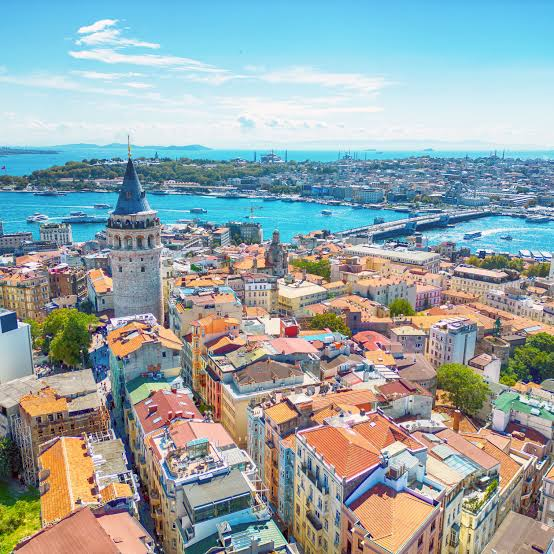
Antalya
Antalya, Akdeniz'in en popüler tatil şehirlerinden biridir. Konyaaltı Plajı, Kaleiçi ve Düden Şelalesi görülmeye değer yerlerdir.
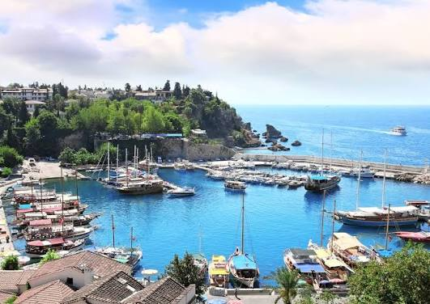
Kapadokya
Kapadokya, peri bacaları ve eşsiz doğal oluşumlarıyla tanınır. Sıcak hava balonları, vadileri ve tarihi yeraltı şehirleriyle turistlerin ilgisini çeker.
İzmir
İzmir, Ege Bölgesi'nin önemli şehirlerinden biridir. Saat Kulesi, Kordon, Efes Antik Kenti ve Çeşme en çok ilgi gören yerlerdendir.
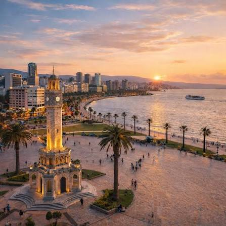
Muğla
Muğla, güzel koyları ve turkuaz deniziyle ünlüdür. Bodrum, Fethiye, Marmaris ve Ölüdeniz şehrin en popüler gezi noktalarıdır.
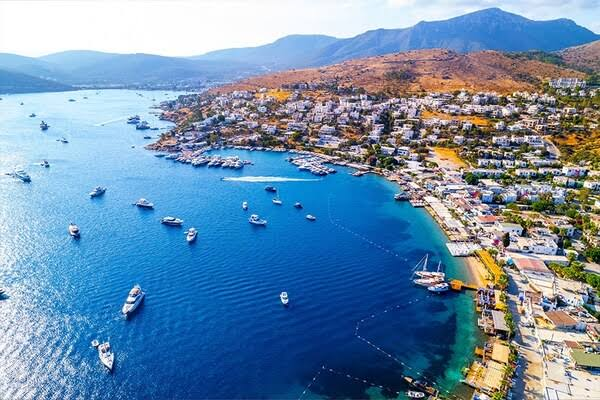
Trabzon
Trabzon, Karadeniz'in doğal güzellikleriyle öne çıkan şehirlerinden biridir. Sümela Manastırı, Uzungöl ve yaylaları görülmeye değerdir.
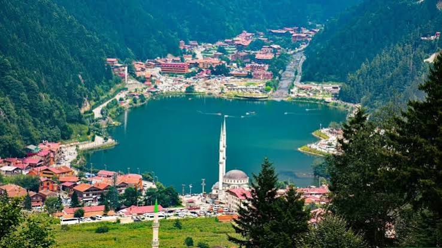
Bartın
Bartın, doğal güzellikleri ve sakin atmosferiyle dikkat çeker. Amasra, İnkumu Plajı ve Güzelcehisar Lav Sütunları önemli gezi noktalarıdır.
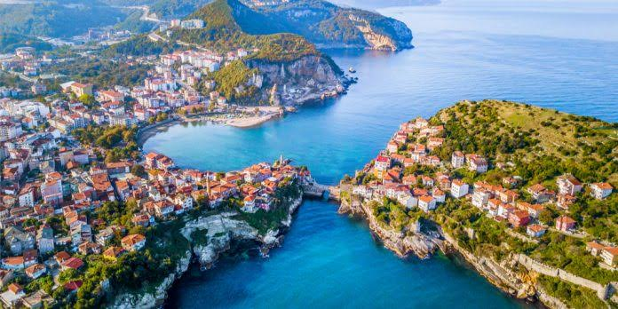
Rize
Rize, yemyeşil doğası ve yaylalarıyla tanınır. Ayder Yaylası, Fırtına Deresi ve Zilkale ziyaretçilerin ilgisini çeken yerlerdir.
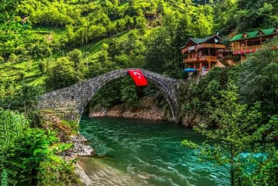
Çanakkale
Çanakkale, tarihi önemi ve doğal güzellikleriyle bilinir. Şehitlik, Truva Antik Kenti ve Assos en önemli ziyaret noktaları arasındadır.
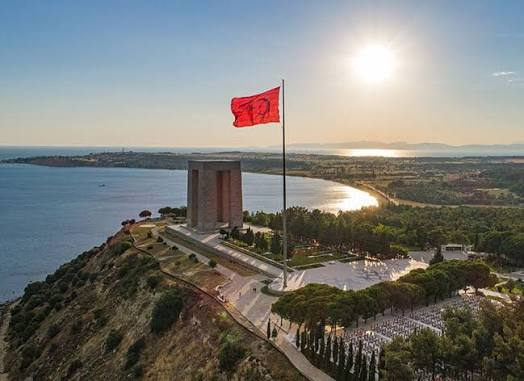
Eskişehir
Eskişehir, modern şehir yaşamı ve tarihi dokusuyla dikkat çeker. Odunpazarı Evleri, Porsuk Çayı ve Sazova Parkı gezilebilir.
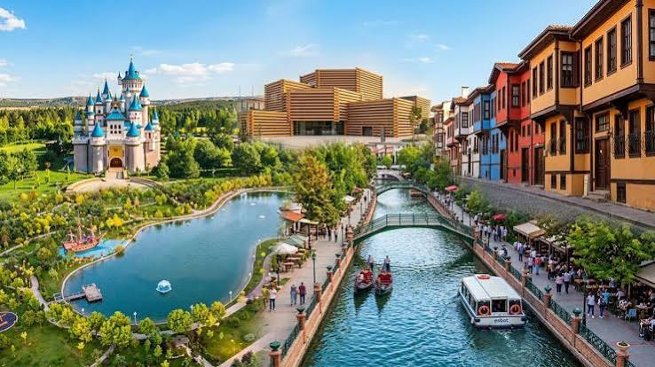
Gaziantep
Gaziantep, mutfağı ve tarihi yapılarıyla ünlüdür. Zeugma Mozaik Müzesi, Bakırcılar Çarşısı ve tarihi sokakları ziyaret edilebilir.
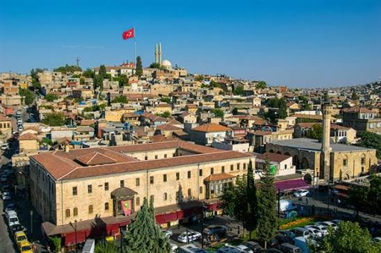
Konya
Konya, tarihi ve kültürel mirasıyla önemli şehirlerimizden biridir. Mevlana Müzesi, Alaeddin Tepesi ve tarihi yapıları görülmeye değerdir.
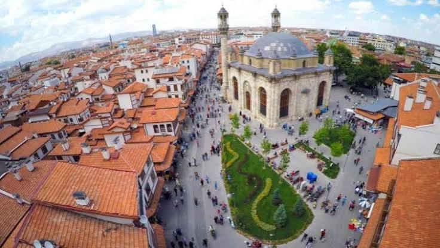